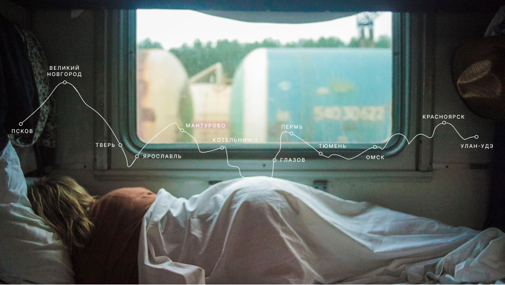
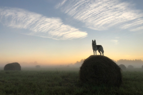
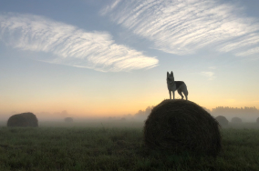
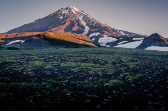
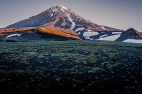
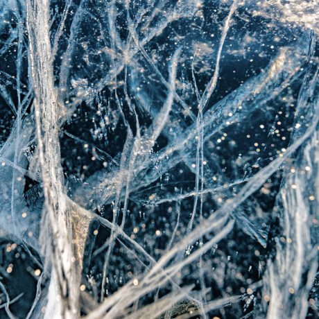

Путешествия по России
Настоящая страна не в выпусках новостей, а здесь.
ваша полка - верхняя
Чего мы там не видели?
По опросам ВЦИОМ, 95% россиян мечтают куда-нибудь поехать, но только 36% планируют провести отпуск в родной стране. Мол, чего мы тут, дома, не видели? На самом деле, Россия — это целая вселенная с ласковым морем юга, густыми лесами Саян и суровыми льдами плато Путорана. А ещё увидеть все эти красоты можно без миллионов на счету, загранпаспорта и многочасовых перелетов. Как, например, Вера Башмакова — смелая молодая мама, которая взяла в охапку троих детей, усадила их в свою «Ладу» и проехала 20 тысяч километров по родной стране. Мы выбрали и описали некоторые интересные места, достойные вашего отпуска.
- Часовых поясов 11
- Объектов природного наследия ЮНЕСКО 12
- Объектов культурного наследия ЮНЕСКО 16
- Природных заповедников 105
- Аэропортов 241

 



 



Куршская коса
URL
park-kosa.ru/Здесь, посреди лесов и песчаных дюн, вы сможете увидеть два водных горизонта — спокойного Куршского залива с одной стороны и подёрнутого рябью волн Балтийского моря с другой. Уникальная природная зона на краю российского анклава.
На этом Калининградская область не заканчивается. Для путешественника и исследователя там же по соседству — самая западная точка России, Балтийская коса, — и немецкое наследие россыпи небольших приморских городов. Атмосфера здешних мест исключает суету, окуная в спокойствие природы и запах стального, прохладного моря.
Кольский

Почти весь полуостров находится за Полярным кругом. Саамская тундра, от которой на юг — тайга, а на север — Ледовитый океан, прикидывающийся Баренцевым морем.
Возможно, вы смотрели Звягинцева и даже слышали историю арктического фестиваля в Териберке. Возможно, слово «Хибины» не осталось под снегом школьных воспоминаний об уроках географии. Возможно, вы не интересовались пронизывающей земную кору сверхглубокой скважиной, а от апатитов вас давно накрывает апатия. Но ваша мечта увидеть северное сияние начинает сбываться с билетом в Мурманск.
Алтай
URL
Facebook
Алтай — одно из красивейших мест в России. В первую очередь из-за гор: если ехать вдоль хребта, вы увидите склоны, усыпанные соснами, горные реки и озёра. А если вы откроете в автомобиле окна, сможете познакомиться с невидимым чудом здешних мест — горным воздухом.
Климат на Алтае умеренный, поэтому ехать сюда лучше всего летом. Так вы увидите всё разнообразие местной флоры и фауны. По лесам Алтая бродят лоси, над хребтами летают орлы, а на равнинах пасутся косули. И знаменитые манулы — тоже обитатели Алтайского края.
Зимний Байкал
Всем известен Байкал как крупнейшее озеро в мире. Многие также знают, что это самый большой источник пресной воды и одно из красивейших мест в России.
Конечно, это всё так. Но Байкал ещё идеальное место для соревнований по скийорингу. Это такой вид спорта, когда лыжник привязывает себя к мотоциклу, и тандем старается развить как можно бóльшую скорость на льду. В марте 2019 года на фестивале «Байкальская миля» был поставлен мировой рекорд — 197.011 км/ч.
Карелия

Сибирь заканчивается не на Урале, а в Карелии: образующая тайгу сибирская лиственница не растёт западнее Водлозера. Зато здесь она вымахивает на 30 метров — леса карельских национальных парков из-за непроходимых болот никогда не знали топора. Некоторым соснам уже больше чем полтысячелетия. Прикоснитесь к живому существу, видевшему солнце раньше, чем увидал его Иван Грозный. В девственном лесу на сотню километров не встретишь тропы. А на редких тропинках деревья в паре метров от земли помечены медвежьими когтями. Чтобы все знали, кто тут хозяин.
В глубины Земли и в дальний космос
Видео от студии Stereotactic о местах в России, где ведутся фундаментальные исследования
До Байкала «на собаках»
По мотивам учебной темы о Транссибе и iframes — путешествие от столицы до Байкала на электричках.
Фотографы, снимающие Россию
Природа и люди вдохновили их работы, удостоенные наград на международных конкурсах
«Если вам кажется, что в России ничего не происходит, то просто выгляньте „наружу“...»
Виктор Лягушкин
«Если в город едут туристы — неважно за чем они туда едут: за шамбалой или фрески Рублева искать, или на родину Тарковского — туристы обеспечивают любой город молодёжью, рабочими местами и в конечном счёте наполняют его жизнью.»
Иван Хафизов
«Ты приезжаешь, и люди рассказывают тебе, как им плохо. А когда ты покажешь, как им плохо, то ты сволочь и всё очернил.»
Сергей Максимишин